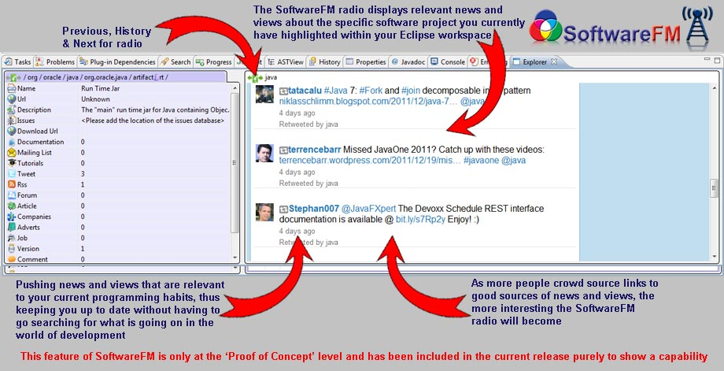

Installing SoftwareFm
SoftwareFm is installed as an Eclipse plugin. Click here for instructions. The update site is http://www.softwarefm.com/update. The plugin has been verified against the Indigo release.The SoftwareFM view
Accessible with the Menu Window/Show View/Other then SoftwareFm/Explorer or Ctrl-3 and start typing "softwarefm".When working in an editor
SoftwareFM shows a summary of the information available for the software project that sourced the item you have selected. The right hand side shows a selection of the referenced materials. For example if there is are rss feeds, or tweets for this, then the "radio station" will show you a random page from them. This is work in progress, but the vision of the radio station is to provide information that is important or entertaining based on your programming habits.
When clicking in the SoftwareFm
When you start interacting with the SoftwareFm explorer (left or right clicking with the mouse in the left hand panel), the radio station vanishes, and the details section appears